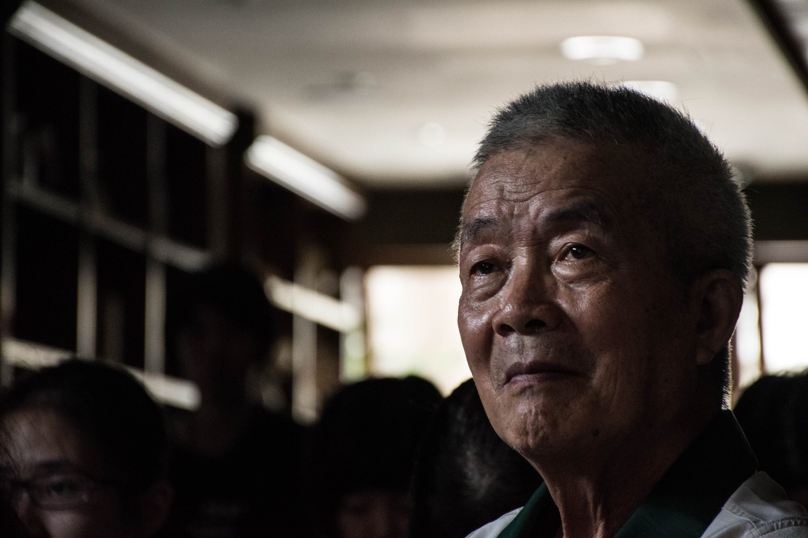
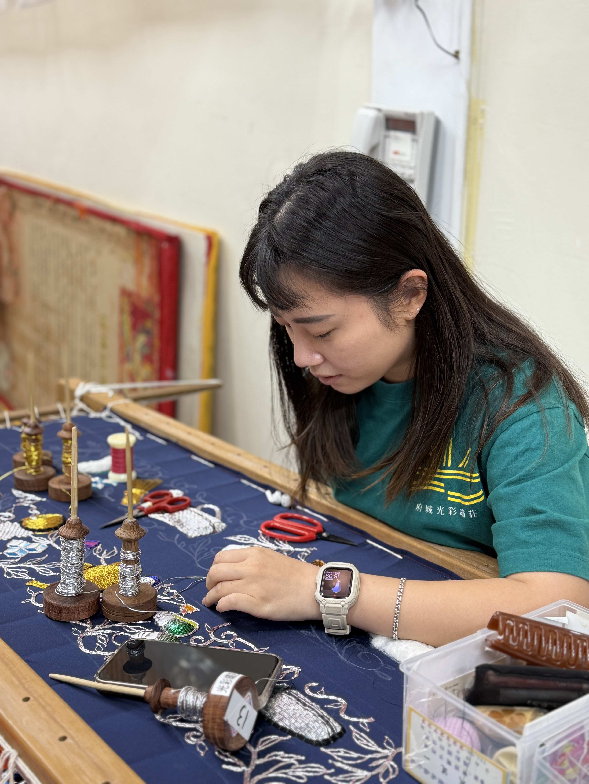

繡出台灣魂的國寶級大師｜林玉泉 老師
林玉泉老師擅長立體刺繡，以「一形、二體、三色」聞名。他不追求快速與大量，而是堅持手工、用心、慢工出細活。每一幅作品，不只是繡品，更像是一首靜靜訴說文化的詩。
他曾將作品贈與多明尼加總統，也在日本京都展出台灣刺繡之美，把這項傳統技藝帶向世界。
即使市場充斥著廉價的仿製品，阿泉師依然堅守傳統的棉花立體繡，拒絕工廠製品的空洞與冷漠。
他用生命告訴我們：「傳統不是包袱，是記憶，是價值，是我們從哪裡來的證明。」
他不只是一位繡師，更是一位教師、一位傳承者。十多年來，他將自己的技藝與信念一針一線地縫進學生的心裡。
「這是我們的文化，值得被珍惜一輩子。」
現任CEO｜林婕瑀
繼承的是技藝，開創的是新路，二代繡師的光彩願景。
林婕瑀，自小在父親林玉泉老師的繡莊裡長大，針線聲與綢緞香，是她最熟悉的童年背景音。
出社會輾轉多年回到繡莊，她深信不為了「守成」，而是為了創造傳統的新可能。
她開始將年輕人的視角帶入繡藝之中，不只保留立體刺繡的深厚工法，更加入現代設計語彙，讓繡品不再只屬於廟宇與典禮，也能走進日常與國際舞台。
她重新打造品牌形象，開發文創商品，參與展覽與跨界合作，更重要的是，吸引一群同樣熱愛文化的年輕繡師加入，為這座老繡莊注入了全新的生命力。
繡莊新生代
年輕繡師進駐，傳統手藝正在改寫故事


傳統刺繡，不再只是上一代的回憶。如今，越來越多年輕人走進繡莊，用他們的創意與熱情，為這門古老工藝注入全新的生命力。
在光彩繡莊，是與時俱進的蛻變。無論是結合現代設計、跨界服裝、或是轉化為新媒體的視覺語言，這些新一代繡師以年輕的眼光重新詮釋傳統，讓刺繡不只是手藝，更是一種文化態度。


